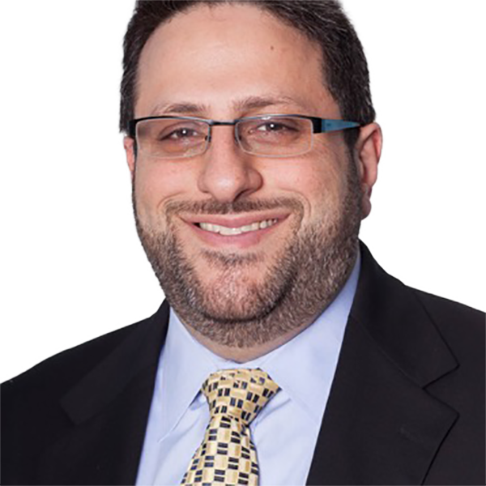
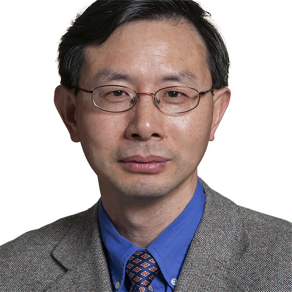
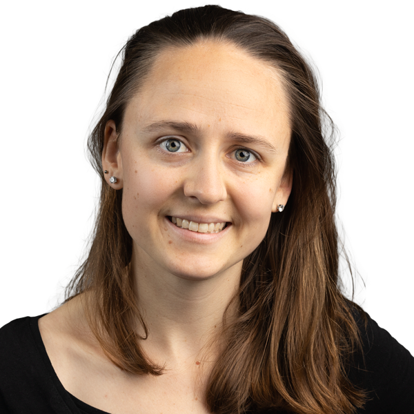

Directory

David FisherSenior University LecturerForensic Biology/Human DNA TypingForensic Investigative Genetic Genealogy (FIGG)Guillermo Jimenez AlemanAssistant ProfessorPhytochemistryChemical EcologyPlant BiochemistryPlant-Insect InteractionsTamara GundProfessordrug designcomputational chemistry and Molecular ModelingAlexei KhalizovProfessorAtmospheric chemistryaerosolsPhysical Chemistrygas-phase reactionsKevin KohUniversity LecturerMengyan LiProfessorEnvironmental Microbiology and BiotechnologyEnvironmental RemediationWater and Wastewater TreatmentMicrobial Ecology and ToxicologySomenath MitraDistinguished ProfessorAnalytical chemistryNanotechnologyenvironmental sceincebiologyCarlos PachecoSenior University LecturerNMR is widely applicable to a broad range of projectswhether in liquid-state or solid-stateNMRSSNMRKevin ParmeleeSenior University LecturerCrime Scene Investigation methods, procedures, & technologiesAR/VR technologies related to CSIForensic Science Policy, Standards, and LeadershipDistortion topics related to Latent Print AnalysisMieke PeelsUniversity LecturerStephen PrevisProfessor of PracticePharmacologyNutritional BiochemistryDrug DiscoveryIsotope Tracers
Zeyuan QiuProfessorNatural Resource and Environmental Economics • Integrate biophysical simulationsocialWatershed managementnatural resources and environmental economicsWunmi SadikVice Provost for Faculty AffairsBiosensorsSurface chemistryelectrochemistryenergySai Casado ZapicoAssistant ProfessorEpigenetics to improve age-at-death estimation in forensic anthropologyPost-mortem Interval determinations based on -omics technologiesBody fluid identification applying protein-based technologiesDNA recovering from tough samples through modification of extraction methodologiesFarnaz ShakibAssistant ProfessorTheoretical and Computational ChemistryLight-Matter InteractionMaterials ScienceTrevor Del CastilloAssistant ProfessorInvestigation of sequence-defined oligomers for biological/pharmaceutical applicationsChemically recyclable plastic
Genoa WarnerAssistant Professorendocrine disruptionreproductive toxicologysustainable chemistryLijie ZhangAssistant ProfessorEnvironmental biogeochemistrysoil/water contamination remediationresource recoverywater purificationYuanwei ZhangAssociate ProfessorNIR Light-Regulated Cell Signalingpotentiallyfor the treatment of diseases as well as other exciting possibilitiesOrganic Chemistry and NanotechnologyNo faculty match “”.